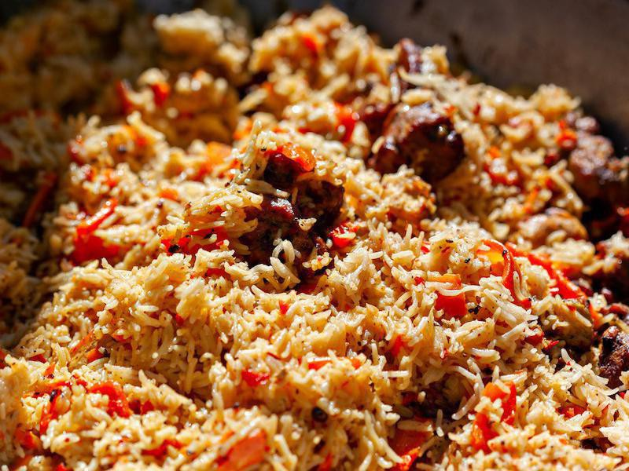

The Best Traditional Food in Every Country
Albania – Byrek
Phyllo pastry is a common ingredient of Balkan dishes, and in Albania, byrek is just one example of its tasty uses.
Stuffing the filo pastry with creamy feta cheese and spinach (and sometimes meat like lamb), byrek is a pie that can be served as a main dish or an appetizer.
Andorra – Escudella
Known as Andorra's national dish, "Escudella i carn d'olla" is a filling stew made with pasta and tons of meat. You'll find chicken, veal, blood sausage, meatballs, and even pig snout and trotters combined in this Catalan dish most often saved for cold winters and holidays.
This is definitely one to be enjoyed at Christmastime!
Armenia – Dolma
So beloved is dolma that there are more than 50 different types of this Armenian main dish.
Cabbage or grape leaves are wrapped around rice and minced meat and cooked in olive oil. It may be served with a variety of dipping sauces or eaten as is.
Austria – Strudel
Strudel — made of crisp dough with delicate layers — can actually have many different kinds of fillings. But the apple variety, which also often includes raisins, is by far the most beloved in Austria.
Order it like the locals by asking for an "Apfelstrudel." Enjoy with a topping of whipped cream or vanilla sauce, and get ready for the sugar high of your life.
Azerbaijan – Plov

Otherwise known as pilaf, plov is a classic dish found in Azerbaijan. It's a saffron rice dish that features dried fruits and prunes, onions and herbs, and meat such as lamb.
As a traditional dish of the country, you'll find more than 40 different plov recipes to enjoy.
Belarus – Potato Pancakes
Take grated potatoes, mix them with egg and minced onion, fry them up, and you have the delicious draniki.
This potato pancake of Belarus is served with sour cream and can be found in restaurants as well as at a variety of food vendors.
Belgium – Waffles

Belgium is home to culinary favorites like Belgian chocolate and beer — but no dish is more iconic than the Belgian waffle.
While in North America, the Belgian waffle is often massive and drowning in syrup, the traditional version is actually a small street food. Eat this treat like it's meant to be enjoyed — sans forks, either plain or with a small helping of whipped cream and sliced berries on top.
Bosnia and Herzegovina – Cevapi
Another popular Balkan dish is also the national dish of Bosnia and Herzegovina. The minced meat sausage, known as cevapi, can be made using lamb, veal, pork or beef.
Cevapi is often served with somun, a pita-like bread, and chopped onion.
Georgia – Khinkali
If you attend any large family gathering or holiday event in Georgia, you are bound to find "khinkali." These meat-filled dumplings are perfect party foods and a filling appetizer.
Khinkali can be made with pork, beef or lamb and includes spices. Different recipes may add cheese, potato or mushrooms.
Greece – Gyros

If there’s a better hand-held street food than the gyro — flatbread stuffed with rotisserie-grilled meat, then topped with creamy tzatziki sauce — we don’t know what it is. The dish originated in Greece, and in more recent years has become popular across the world, including in the U.S.
Outside its home country, "gyro" is one of the most consistently mispronounced foods on the planet. The correct way to say it? Yee-roh.